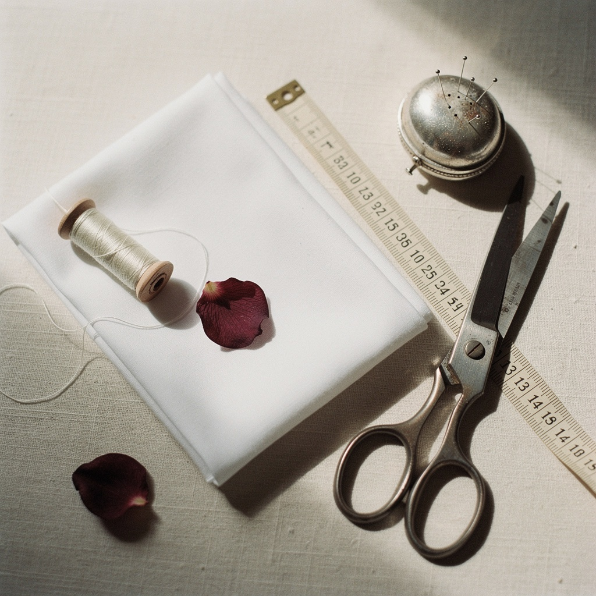

01 / BRAND STORY
한 사람을 이해하는 옷에서 시작합니다.
RE:STITCH는 맞춤복이 지켜온 장인정신에서 출발합니다.
한 사람의 몸을 이해하는 정교한 패턴과 섬세한 봉제의 가치를 이어받아, 현대적인 Ready-to-Wear로 재해석합니다.
여성의 몸을 억지로 바꾸기보다 본연의 선을 자연스럽게 살리는 실루엣.
아름다움과 실용성을 함께 담은 옷을 만듭니다.
02 / BESPOKE → READY-TO-WEAR → RE:STITCH
맞춤복의 가치를
오늘의 방식으로 다시 잇습니다.
맞춤복의 정교함을 그대로 재현하는 것이 아니라, 그 안에 담긴 장인정신과 가치를 오늘의 방식으로 다시 잇습니다.
- 01 BESPOKE
- 한 사람의 몸을 이해하는 정교한 패턴
- 02 READY-TO-WEAR
- 일상에서 입을 수 있도록 확장된 디자인
- 03 RE:STITCH
- 맞춤복의 가치를 현대적인 여성복으로 재해석
03 / OUR PHILOSOPHY
몸을 바꾸기보다,
본연의 선을 이해합니다.
RE:STITCH는 여성의 몸을 옷에 맞추기보다,
옷이 몸을 이해해야 한다고 믿습니다.
유행보다 오래 남는 아름다움,
그리고 한 벌을 제대로 만드는 태도를 지향합니다.
04 / THE WAY WE MAKE
Pattern by pattern.
Stitch by stitch.

CRAFTSMANSHIP · 장인정신
FEMININITY · 여성적인 실루엣
FUNCTION · 아름다움과 실용성
PRECISION · 정교한 패턴과 봉제
MODERNITY · 현대적인 재해석